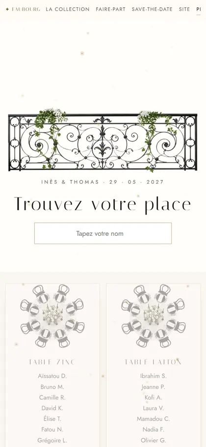
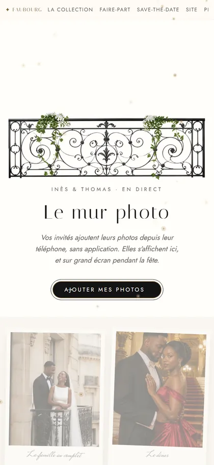
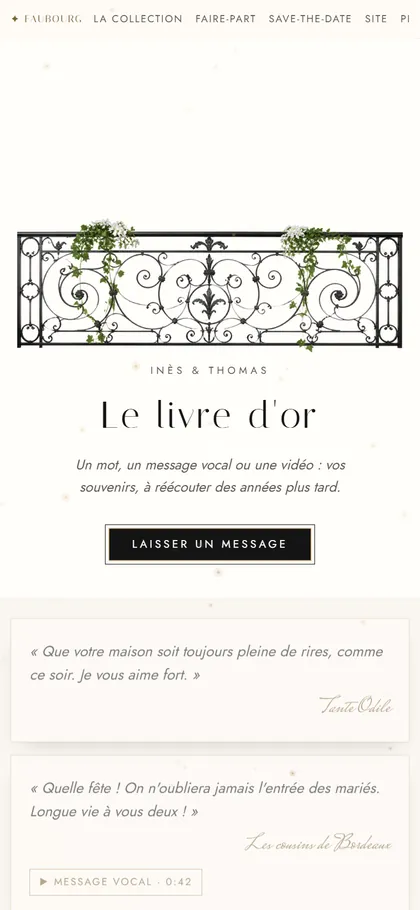
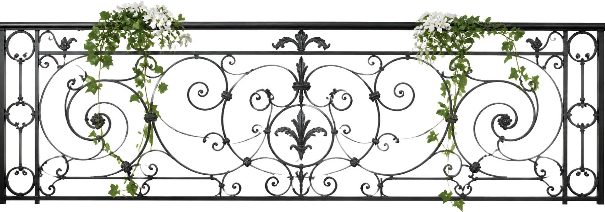

Plan de tableChacun trouve sa place
Mur photoLes photos des invités, en direct
Livre d'orMots, voix et vidéosMaison Vivat · Collection réaliste
Paris au coucher du soleil, depuis un balcon. Une fête élégante et complice, pour deux amoureux de la ville qui les a réunis.
Toits de zinc au soleil couchant, fer forgé et laque noire : un mariage parisien, vu depuis le balcon.

Touchez un visuel pour l'ouvrir

Plan de tableChacun trouve sa place
Mur photoLes photos des invités, en direct
Livre d'orMots, voix et vidéosVoir le faire-part tel que le reçoit Aminata, une invitée